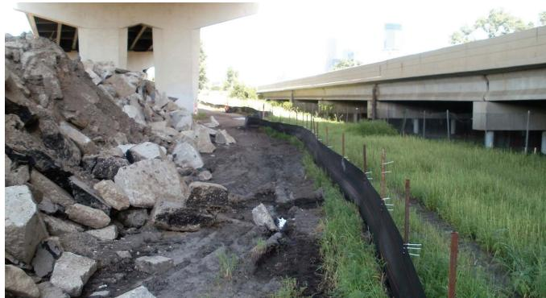
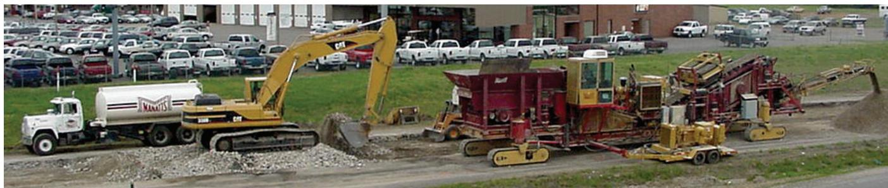

Recycled Concrete Economic and Environmental Benefits
The Recycled Concrete Economic and Environmental Benefits concept provides a decision‑support framework for determining whether recycled concrete aggregate (RCA) should replace virgin aggregate on a construction project. It directs stakeholders to evaluate early‑stage cost inputs—removal, hauling, processing, quality control versus purchase and disposal costs—along with transportation distances, equipment availability, and local market conditions, recognizing that the economic and environmental advantage of RCA is tightly linked to reduced haul mileage and fuel use (especially when on‑site or mobile crushing is feasible) [1]. When the analysis shows lower total unit cost, acceptable performance, and compliance with specifications, the project can achieve measurable cost reductions, emissions cuts, and shortened construction time while maintaining required performance standards [1].
Sources (1)
Purpose and decision context
The concept is intended to support the decision of whether to specify recycled concrete aggregate (RCA) rather than virgin aggregate for a construction project – including the choice between on‑site/mobile crushing and off‑site/stationary processing. It directs stakeholders to compare early‑stage cost data (removal, hauling, processing, quality‑control versus purchase and disposal costs), transportation distances, equipment availability, and local market conditions. When the analysis shows lower total unit cost, reduced haul mileage or fuel use, acceptable performance, and compliance with specification limits, the decision should favor RCA as the preferred material option. [1]
[1] — Ch. 2 (pp. 19–21), Ch. 3 (pp. 33–35), Ch. 5 (p. 58), Ch. 7 (pp. 81–82)
The concept tackles the high cost and logistical burden of sourcing and transporting virgin aggregates for construction projects. Its primary need is “the reduction of overall project costs while maintaining required performance,” achieved by recapturing value from demolished concrete and shortening haul distances. Because “the economic and environmental benefits of selecting RCA over virgin aggregates are highly linked to transportation costs,” on‑site or mobile crushing can cut fuel use, emissions, and construction time. The approach also provides a cost‑effective alternative for unbound aggregate shoulders, where “the economic benefits of using RCA in aggregate shoulder surfacing depend mainly on the difference in cost between using virgin material and using recycled concrete aggregate.” [1]
[1] — Ch. 2 (pp. 19–21), Ch. 3 (pp. 33–35), Ch. 5 (p. 58), Ch. 7 (pp. 81–82)
Scope and applicability
Recycled concrete aggregate (RCA) is appropriate whenever a project involves demolition or replacement of existing concrete pavement—highway resurfacing, lane widening, base‑course or shoulder construction, parking‑lot upgrades, and similar infrastructure—that can be reclaimed with minimal contaminants and where agency specifications permit its reuse. The economic and environmental case should be developed in the early phases (conceptual design, scoping, bidding) so that cost‑saving opportunities are identified before contracts are awarded. When site logistics allow on‑site or mobile crushing, reduced haul distances lower fuel use, emissions, and construction time; in urban settings where a permanent recycling plant is nearby, short transport distances make stationary processing economical. The procurement approach must give contractors the option to propose RCA solutions so that cost and environmental benefits can be evaluated alongside conventional material choices. [1]
The following figure illustrates a well-implemented on-site material crushing program in an urban area.

On-site concrete crushing operation in an urban environment. [1]The image displays a large pile of broken concrete rubble situated beneath a highway overpass, indicating the presence of demolition waste ready for processing. A black silt fence runs along the perimeter to contain debris and manage runoff during the operation.
[1] — Ch. 2 (pp. 19–21), Ch. 3 (pp. 33–35), Ch. 5 (p. 58), Ch. 7 (pp. 81–82)
Recycled concrete is unsuitable when the project’s early‑stage cost analysis shows no clear savings, such as when site logistics or local market conditions make hauling, processing, or tipping fees for RCA higher than the price of virgin aggregate; similarly, if the scope does not provide enough on‑site material to justify a mobile crushing plant or if quality assurance cannot be assured for off‑site RCA, a conventional aggregate approach is preferable. “In the selection of project alternatives, decisions are often made based upon initial cost.” and “Project-specific conditions, such as scope, site logistics, local industry and market factors, and hauling and tipping fees, will control the costs of both virgin aggregates and RCA” shift the dominant decision driver from recycling benefits to overall project cost and feasibility. When haul distances from demolition to a processing plant are long enough that transportation costs outweigh the savings from recycling, “The economic and environmental benefits of selecting RCA over virgin aggregates are highly linked to transportation costs,” and the advantage disappears, making virgin aggregate or an off‑site facility preferable. Insufficient on‑site space for crushing equipment, restrictive dust‑or runoff regulations, or broken concrete that yields very small pieces leading to lower recovery rates or contamination also erode technical and financial feasibility. If a project requires high‑performance Portland cement concrete and the only available stationary recycling plant handles mixed demolition debris, “contamination may be an issue, particularly if RCA is to be used for PCC mixtures,” making virgin aggregate or on‑site processing the preferred choice. In non‑urban locations where long transportation distances negate lower production costs at a stationary plant, recycling again becomes uneconomic and alternative material sourcing should be selected. [1]
[1] — Ch. 2 (pp. 19–21), Ch. 3 (pp. 33–35), Ch. 5 (p. 58)
Information needs
Evaluating the economic and environmental benefits of recycled concrete aggregate requires a set of project‑specific inputs. Condition and site data must detail the overall scope, haul distances, routes, access constraints, and whether on‑site crushing equipment can be accommodated or an off‑site plant is required; urban versus rural location influences transportation costs. Cost information should include local virgin‑aggregate prices, RCA production and tipping/processing fees, hauling rates, pavement removal and disposal expenses, equipment and plant capacity costs, and any economies of scale. Traffic or logistics data are needed to quantify haul routes, fuel use, and potential reductions in truck trips that affect emissions and construction duration. Environmental inputs must cover landfill availability, dust and runoff regulations, and other site‑specific environmental constraints. Stakeholder input should capture cost‑saving priorities, community impact concerns, and material‑quality specifications for RCA use. [1]
[1] — Ch. 2 (pp. 19–21), Ch. 3 (pp. 33–35)
Alternatives
The feasible alternatives that must be evaluated are: (1) the baseline use of virgin (or blended) aggregate; (2) recycled concrete aggregate (RCA) produced from demolished pavement, which can be generated either by on‑site or mobile crushing equipment or by sending the material to an off‑site stationary recycling plant (including permanent urban facilities); and (3) the end‑use disposition of RCA, i.e., disposal in a landfill/on‑site burial versus beneficial‑reuse options such as incorporating coarse RCA—alone or blended with virgin aggregate—into new concrete mixes, using RCA fines for soil or subgrade stabilization, or placing fines as pipe‑bedding material. Each option should be quantified with site‑specific costs (removal, hauling, processing, acquisition, tipping fees) and environmental impacts (fuel use, emissions, contamination risk), allowing a cost‑difference or life‑cycle comparison to identify the threshold where recycling provides an advantage. [1]
[1] — Ch. 2 (pp. 19–21), Ch. 3 (pp. 33–35), Ch. 5 (p. 58), Ch. 7 (pp. 81–82)
On‑site RCA production requires on‑site or mobile crushing and screening equipment together with breaking, excavating, steel‑removal tools, providing all material inputs directly at the project; this minimizes hauling distances, which reduces emissions and can shorten construction time compared with off‑site processing that involves transport to a permanent facility. Both options must meet dust, runoff and safety regulations, so risk management focuses on environmental and occupational compliance, while the source does not specify any future‑maintenance requirements for either option. [1]
The following figure illustrates the mobile on-site crushing equipment used to produce recycled concrete aggregate directly at the project location.
 Mobile on-site crushing equipment [1]
Mobile on-site crushing equipment [1]
The image displays a large, red and yellow mobile crushing plant situated on unpaved ground. This apparatus represents the “on-grade (or near-grade) crushing” process used for producing recycled concrete aggregate (RCA).
[1] — Ch. 3 (p. 33)
Decision criteria
The decision to employ recycled concrete aggregate must be controlled chiefly by cost. As the guide states, “decisions are often made based upon initial cost,” and the economic advantage is driven by “material, haul, and processing expenses” that generally favor recycling. Performance and sustainability criteria—captured in the guidance that it “should be governed primarily by cost, performance, and sustainability considerations”—are acknowledged but serve only as secondary supports to the dominant economic driver. [1]
[1] — Ch. 2 (pp. 19–21), Ch. 3 (pp. 33–35), Ch. 5 (p. 58), Ch. 7 (pp. 81–82)
When comparing project alternatives that involve recycled concrete aggregate, the primary weight should be placed on overall cost savings identified early in design and bidding, because decisions are typically driven by initial cost; this includes recapturing material value, reduced haul distances, fuel use, and efficiencies from on‑site processing. Secondary criteria—such as site logistics, local market prices for virgin aggregates, hauling and tipping fees, and the need for quality assurance of RCA—are then weighted according to how they affect total project cost and feasibility, while broader economic or community impacts (job creation, reduced traffic) are considered only after the core cost analysis. Constraints like equipment availability and rising landfill tipping fees set thresholds that can elevate recycling from a lower‑ranked option to the preferred choice. [1]
[1] — Ch. 2 (pp. 19–21)
Analysis methods and tools
The projected savings rely on a set of explicit assumptions: that project‑specific conditions (scope, site logistics, local market and hauling/tipping fees) will make RCA cheaper than virgin aggregate; that the recycling process can be performed close to the site—either by on‑site/mobile crushing or by locating a stationary plant within an urban area—so transportation costs remain low; that the chosen crushing‑screening system operates at sufficient capacity to achieve economies of scale and that QA/QC will deliver the expected yield advantage. It is also assumed that breaking and removal costs are identical for both options, that contamination levels are manageable (especially for non‑PCC applications), and that any tipping or processing fees can be offset by lower per‑ton production costs.
Uncertainties stem from variability in those same factors: fluctuating local aggregate prices, changing landfill availability and tipping fees, actual haul distances and logistics, size distribution of broken concrete affecting recovery rates, the presence and type of contaminants, plant efficiency differences across sites, regulatory compliance costs, and the feasibility of deploying mobile crushing equipment. These uncertainties can shift cost‑benefit calculations either way. [1]
[1] — Ch. 2 (pp. 19–21), Ch. 3 (pp. 33–35), Ch. 5 (p. 58)
Stakeholders and constraints
The owner or agency, together with other project stakeholders, must provide the early‑stage cost‑benefit input while contractors supply feasible recycling options and logistics data. Using that information, the owner decides whether the initial‑cost advantage of recycled concrete outweighs alternatives such as virgin aggregate, guided by criteria like haul distances, tipping fees, yield and quality‑assurance requirements. Final approval rests with the owner or agency once the projected savings meet the project’s cost thresholds and any logistical constraints are satisfied. [1]
[1] — Ch. 2 (pp. 19–21)
The choice to use recycled concrete aggregate (RCA) is constrained by a suite of permitting and design requirements. Environmental permits that control dust emissions and storm‑water runoff must be obtained, and safety regulations govern crushing, screening, and hauling operations. These rules “Environmental regulations associated with dust and runoff (discussed in Chapter 7) and safety regulations may also play a role in scoping and selecting production options.” Additionally, both the economic and environmental advantage of RCA depend on short haul distances; consequently “hauling should be minimized” and “On‑site processing of RCA provides the advantages of reduced hauling distances.” Water‑quality permits further limit use: “NPDES construction permits often require concrete wash‑off management to prevent discharge of liquids and solids to soils/waters,” requiring BMPs, a SWPPP, and designated wash‑off zones. State transportation agency specifications also restrict mix designs; for example, “TxDOT specifications were developed for using RCA in new concrete mixtures; these specs currently limit RCA fine aggregate to 20% of the fine aggregate blend.” Agency policies may require that bid documents include recycling options while still complying with disposal regulations, and design criteria mandate designated wash‑off areas and documented handling methods. [1]
[1] — Ch. 3 (p. 33), Ch. 7 (pp. 81–82)
Timing and implementation
The decision to adopt recycled‑concrete solutions should be taken at the front end of a project. Cost savings need to be identified while the project is still being conceived, during design development and before bids are solicited, because alternatives are normally chosen on the basis of initial cost. Evaluating site logistics, market conditions and hauling fees at this early stage allows owners to position recycling as the preferred option and enables contractors to incorporate it into their proposals. [1]
[1] — Ch. 2 (pp. 19–21)
Action to pursue recycled concrete is triggered when cost‑saving opportunities are recognized early—during project conception, design, or bidding—and when a comparison shows that the total cost of RCA (including removal, hauling, and processing) falls below the cost of virgin aggregate because market prices for natural aggregates rise or landfill tipping fees increase as disposal space dwindles. At that point, if on‑site mobile crushing is feasible, the project can capitalize on reduced haul distances and fuel use, making recycling the preferred alternative. [1]
The following figure illustrates a practical application of these economic advantages through an on-site concrete recycling operation.
 Aerial view of a concrete recycling operation set up inside an expressway cloverleaf interchange. [1]
Aerial view of a concrete recycling operation set up inside an expressway cloverleaf interchange. [1]
The image displays a large-scale construction site situated within the curved lanes of a highway interchange, featuring heavy machinery and piles of aggregate material.
[1] — Ch. 2 (pp. 19–21)
To execute the selected recycled‑concrete option, the project team must first recognize that “cost savings for the owner … should be identified during the early stages of project conception, design, and bidding”. This timing secures the needed mobile or portable processing plant, crushers, screens, haul trucks, qualified operators, and a QA/QC program before demolition begins. The equipment suite is extensive: “Production of RCA requires equipment for breaking, excavating, removing steel and other undesirable materials, crushing, screening, and hauling.” Required tools include cutting‑tooth plows or high‑pressure water jets to strip sealants, pavement breakers, drop hammers, slab‑crab buckets on backhoes or loaders, and optional virgin material for blending. Once demolition is complete, the work follows a clear sequence – “The work proceeds in a defined sequence—first hauling, then crushing and screening, followed by placement and compaction” – with on‑site or mobile crushing minimizing haul distances and thereby shortening the overall construction schedule. [1]
The following figure illustrates a typical off-site concrete pavement recycling operation that utilizes this equipment and sequence.

Typical on-site mobile concrete pavement recycling operation [1]The image displays a heavy industrial setup featuring a yellow excavator, a white tanker truck, and a large red mobile crushing plant positioned on a dirt surface.
[1] — Ch. 2 (pp. 19–21), Ch. 3 (p. 33), Ch. 5 (p. 58)
Outcomes and follow-up
Success for recycled concrete benefits is achieved when a project can demonstrate measurable cost reductions relative to using virgin aggregates, such that the identified savings cover material purchase, hauling, and processing expenses while also delivering ancillary gains like fuel avoidance and higher aggregate yield. Success is achieved when the selected RCA production method—especially on‑site processing—delivers measurable cuts in haul distance, associated emissions, and overall construction time relative to a virgin‑aggregate baseline. Success is realized when recycled concrete aggregate, including the fines generated during crushing, meets project specifications, demonstrates comparable in‑service performance to conventional materials, and delivers measurable cost reductions such as avoided landfill tipping fees while minimizing waste disposal. These outcomes are measured by (1) comparing documented project data—material costs, haul distances, fuel consumption, and QA/QC‑verified RCA quality—to a virgin‑aggregate baseline; (2) quantifying percentage cost cuts (e.g., 27% reduction), volume yield improvements (up to 15% greater than natural aggregates), and fuel saved; (3) tracking emissions reductions derived from reduced mileage; (4) confirming that RCA gradations satisfy state specifications and monitoring long‑term structural performance; and (5) accounting for avoided landfill tipping fees and other disposal cost savings. [1]
[1] — Ch. 2 (pp. 19–21), Ch. 3 (p. 33), Ch. 7 (pp. 81–82)